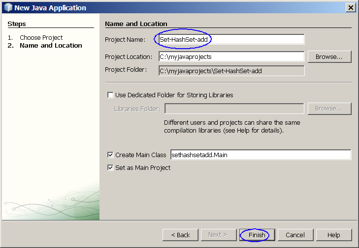
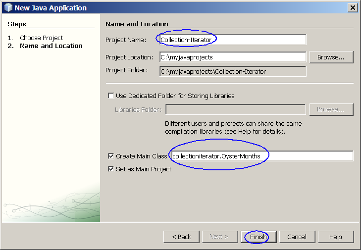

Using Java Collection Frameworks
A collections framework is a unified architecture for
representing and manipulating collections. All collections frameworks
contain the following:
- Interfaces: These are abstract data types that represent
collections. Interfaces allow collections to be manipulated
independently of the details of their representation. In
object-oriented languages, interfaces generally form a hierarchy.
- Implementations: These are the concrete implementations of
the collection interfaces. In essence, they are reusable data
structures.
- Algorithms: These are the methods that perform useful
computations, such as searching and sorting, on objects that implement
collection interfaces. The algorithms are said to be polymorphic:
that is, the same method can be used on many different implementations
of the appropriate collection interface. In essence, algorithms are
reusable functionality.
This hands-on lab takes you through the basics of using Java
Collection Framework for
developing Java applications.
Expected duration: 75 minutes


Software Needed
Before you begin, you need to install required software (JDK and
NetBeans IDE) on your
computer as
described
here. Also download and unzip the hands-on lab file mentioned
below.
- If you have not installed it yet, install it as described here.
- 1016_javacollections.zip (download)
- It contains this document and the lab contents
- Download it and unzip in a directory of your choice
Change Log
- Feb. 9th, 2007: Created
- April 12th, 2007: Homework is changed to use HashSet instead of
TreeSet
- June 10th, 2008: JDK 6 and NetBeans 6.1 are used
- Jan. 10th, 2009: NetBeans 6.5 is used
- Nov. 7th, 2009: Some cosmetic changes are made
Lab Exercises
Exercise 1: Build and run "Set"
Collection Objects
The
Set
interface
extends the Collection interface and, by definition, forbids duplicates
within the collection. All the original methods are present and no new
methods are introduced. The concrete Set implementation classes rely on
the equals() method of the object added to check for equality.
The Collections Framework provides two general-purpose implementations
of the Set interface:
HashSet and
TreeSet. More often than not,
you will use a
HashSet for
storing your duplicate-free collection. For efficiency, objects added
to a HashSet need to implement the hashCode() method in a manner that
properly distributes the hash codes. While most system classes override
the default hashCode() implementation in Object, when creating your own
classes to add to a HashSet remember to override hashCode(). The
TreeSet implementation is useful when you need to extract elements from
a collection in a sorted manner. In order to work property, elements
added to a TreeSet must be sortable. The Collections Framework adds
support for Comparable elements and will be covered in detail later.
For now, just assume a tree knows how to keep elements of the java.lang
wrapper classes sorted. It is generally faster to add elements to a
HashSet, then convert the collection to a TreeSet for sorted traversal.
To optimize HashSet space usage, you can tune the initial capacity and
load factor. The TreeSet has no tuning options, as the tree is always
balanced, ensuring log(n) performance for insertions, deletions, and
queries.
Tasks to be performed:
- Build and run an application that uses HashSet
- Find duplication via HashSet
- Find duplication via HasetSet 2
- Build and run an application that uses TreeSet
- Build and run an application that uses
LinkedHashSet
- Set and polymorphism
(1.1)
Build and run an application that uses HashSet
In this step, you are going to build an application that uses
HashSet. You are going to
exercise various methods of the
HashSet
class. The following is quoted from online
JavaDoc
of the HashSet
This class implements the Set
interface, backed by a hash table (actually a HashMap
instance). It makes no guarantees as to the iteration order of the set;
in particular, it does not guarantee that the order will remain
constant over time. This class permits the null element.
This class offers constant time
performance for the basic operations (add, remove, contains
and size), assuming the hash function disperses the elements
properly among the buckets. Iterating over this set requires time
proportional to the sum of the HashSet instance's size (the
number of elements) plus the "capacity" of the backing HashMap
instance (the number of buckets). Thus, it's very important not to set
the initial capacity too high (or the load factor too low) if iteration
performance is important.
0. Start NetBeans IDE if you have not done so yet.
1. Create a new NetBeans project
- Select File->New Project (Ctrl+Shift+N). The New Project dialog box appears.
- Under Choose Project
pane,
select Java under Categories and Java Application under Projects.
- Click Next.

- Under Name and Location
pane, for the Project Name
field, type in Set-HashSet-add as
project name.
- For Create Main Class
field, take the default value sethashsetadd.Main
provided by the IDE.
- Click Finish.

Figure-1.10: Create a new project
- Observe that Set-HashSet-add project
appears and IDE generated Main.java
is displayed in the source editor window of NetBeans IDE.
2. Modify the IDE generated
Main.java
as shown in Code-1.10 below. Study the code by paying
special attention to the bold fonted comments.
package sethashsetadd;
import java.util.HashSet;
public class Main {
public static void main(String[] args) {
// Create HashSet object
HashSet hs = new HashSet(5,
0.5f);
System.out.println(hs.add("one"));
System.out.println(hs.add("two"));
System.out.println(hs.add("three"));
System.out.println(hs.add("four"));
System.out.println(hs.add("five"));
// Print out the HashSet object
System.out.println(hs);
// Add a duplicate item to the HashSet
Boolean b = hs.add("one");
System.out.println("Duplicate item allowed = " + b);
System.out.println(hs);
}
}
|
Code-1.10: Modified Main.java
3. Build and run the project
- Right click Set-HashSet-add project
and select Run.
- Observe the result in the Output
window.
(Figure-1.11 below)
true
true
true
true
true
[one, two, five, three, four]
Duplicate item allowed = false
[one, two, five, three, four]
|
Figure-1.11: Result of running Set-HashSet-add application
Trouble-shooting and
solution: If you are seeing the following warning message
during compilation, that is expected behavior. This warning
message is generated by javac compiler since you are not specifying the
type of the collection using Generics. For now, just ignore the
message.
- Compiling 1 source file to
C:\handson2\development\javacollections\samples\Set-HashSet-add\build\classes
Note:
C:\handson2\development\javacollections\samples\Set-HashSet-add\src\sethashsetadd\Main.java
uses unchecked or unsafe operations.
Note: Recompile with -Xlint:unchecked for details.
Solution:
This exercise is provided as a ready-to-open-and-run
NetBeans project as part of hands-on lab zip file. You can find it as
<LAB_UNZIPPED_DIRECTORY>/javacollections/samples/Set-HashSet-add.
You can just open it and run it.
4. For your own exercise, please do the
following
- Create your own NetBeans project named as MyHashSet
- Create your own HashSet object
with initial capacity of 5
- Add the following objects to the newly created HashSet object
- 2 String objects
- 2 MyOwnClass object (You will have to create MyOwnClass.java
first)
- 3 Integer objects
- Display the HashSet object
return to top of the
exercise
(1.2)
Find duplication
via HashSet
1. Create a new NetBeans project
- Select File->New Project (Ctrl+Shift+N). The New Project dialog box appears.
- Under Choose Project
pane,
select Java under Categories and Java Application under Projects. Click Next.
- Under Name and Location
pane, for the Project Name
field, type in Set-HashSet-FindDup as
project name.
- For Create Main Class
field, take the default value sethashsetfinddup.Main
provided by the IDE.
- Click Finish.
- Observe that Set-HashSet-FindDup
project
appears and IDE generated Main.java
is displayed in the source editor window of NetBeans IDE.
2. Modify the IDE generated
Main.java
as shown in Code-1.20 below. Study the code by paying
special attention to the bold fonted part.
package sethashsetfinddup;
import java.util.HashSet;
import java.util.Set;
public class Main {
public static void main(String[] args) {
// Set up test data
String name[] = {
new
String("Sang"),
new
String("Shin"),
new
String("Boston"),
new
String("Shin")
};
// Create HashSet object
instance and
// assign it to a variable
of Set type.
Set s = new HashSet();
for (int i=0;
i<name.length; i++)
if
(!s.add(name[i]))
System.out.println("Duplicate detected: "+name[i]);
System.out.println(s.size()+" distinct words detected: "+s);
}
}
|
Code-1.20: Modified Main.java
3. Build and run the project
- Right click Set-HashSet-FindDup
project
and select Run.
- Observe the result in the Output
window.
(Figure-1.21 below)
Duplicate detected: Shin
3 distinct words detected: [Shin, Sang, Boston]
|
Figure-1.21: Result of running Set-HashSet-FindDup application
Solution:
This exercise is provided as a ready-to-open-and-run
NetBeans project as part of hands-on lab zip file. You can find it as
<LAB_UNZIPPED_DIRECTORY>/javacollections/samples/Set-HashSet-FindDup.
You can just open it and run it.
4. For your own exercise, please do the
following tasks:
- Modify Main.java as following
- Create your array of Strings called myownnames[] with
duplicates
- Create a HashSet object from the array and display it and make
sure there is no duplcates in the set.
return to top of the
exercise
(1.3)
Find duplication via HashSet 2
In this step, you are going to exercise removeAll() method.
1. Create a new NetBeans project
- Select File->New Project (Ctrl+Shift+N). The New Project dialog box appears.
- Under Choose Project
pane,
select Java under Categories and Java Application under Projects. Click Next.
- Under Name and Location
pane, for the Project Name
field, type in Set-HashSet-FindDup2 as
project name.
- For Create Main Class
field, take the default value provided by the IDE.
- Click Finish.
- Observe that Set-HashSet-FindDup2
project
appears and IDE generated Main.java
is displayed in the source editor window of NetBeans IDE.
2. Modify the IDE generated
Main.java
as shown in Code-1.30 below. Study the code by paying
special attention to the bold fonted part.
package sethashsetfinddup2;
import java.util.HashSet;
import java.util.Set;
public class Main {
public static void main(String[] args) {
// Set up test data
String name[] = {
new
String("Sang"),
new
String("Shin"),
new
String("Boston"),
new
String("Shin")
};
Set uniques = new HashSet();
Set dups = new HashSet();
for (int i=0;
i<name.length; i++)
if
(!uniques.add(name[i]))
dups.add(name[i]);
// Remove items that duplicates
uniques.removeAll(dups);
System.out.println("Unique
words: " + uniques);
System.out.println("Duplicate words: " + dups);
}
}
|
Code-1.30: Modified Main.java
3. Build and run the project
- Right click Set-HashSet-FindDup2
project
and select Run.
- Observe the result in the Output
window.
(Figure-1.31 below)
Unique words:
[Sang, Boston]
Duplicate words: [Shin]
|
Figure-1.31: Result of running Set-HashSet-FindDup2 application
Solution:
This exercise is provided as a ready-to-open-and-run
NetBeans project as part of hands-on lab zip file. You can find it as
<LAB_UNZIPPED_DIRECTORY>/javacollections/samples/Set-HashSet-FindDup2.
You can just open it and run it.
4. For your own exercise, please do the
following tasks:
- Modify Main.java or create your own project as following
- Create your array of Strings called myownnames[] with
duplicates
- Create two HashSet objectts and use removeAll() method to
remove items that have duplicates from the original set.
- Display the two HashSet objects
return to top of the
exercise
(1.4)
Build and run an application that uses TreeSet
In this step, you are going to build an application that uses
TreeSet. You are going to
exercise various methods of the
TreeSet
class. The following is quoted from online
JavaDoc
of the TreeSet
This class implements the Set interface, backed by a TreeMap
instance. This class guarantees that the sorted set will be in
ascending element order, sorted according to the natural order
of the elements (see Comparable), or by the comparator
provided at set creation time, depending on which constructor is used.
This implementation provides guaranteed log(n) time cost for the
basic operations (add, remove and contains).
Note that the ordering maintained by a set (whether or not an
explicit comparator is provided) must be consistent with equals
if it is to correctly implement the Set interface. (See Comparable
or Comparator for a precise definition of consistent with
equals.) This is so because the Set interface is defined
in terms of the equals operation, but a TreeSet
instance performs all key comparisons using its compareTo (or
compare) method, so two keys that are deemed equal by this
method are, from the standpoint of the set, equal. The behavior of a
set is well-defined even if its ordering is inconsistent with
equals; it just fails to obey the general contract of the Set
interface.
1. Create a NetBeans project
- Select File->New Project (Ctrl+Shift+N). The New Project dialog box appears.
- Under Choose Project
pane,
select Java under Categories and Java Application under Projects. Click Next.
- Under Name and Location
pane, for the Project Name
field, type in Set-TreeSet as
project name.
- For Create Main Class
field, take the default value provided by the IDE.
- Click Finish.
- Observe that Set-TreeSet project
appears and IDE generated Main.java
is displayed in the source editor window of NetBeans IDE.
2. Modify the IDE generated
Main.java
as shown in Code-1.40 below.
package settreeset;
import java.util.Set;
import java.util.TreeSet;
public class Main {
public static void main(String[] args) {
Set ts = new TreeSet();
ts.add("one");
ts.add("two");
ts.add("three");
ts.add("four");
ts.add("three");
System.out.println("Members
from TreeSet = " + ts);
Set ts2 = new TreeSet();
ts2.add(1);
ts2.add(2);
ts2.add(3);
ts2.add(4);
ts2.add(2);
System.out.println("Members
from TreeSet = " + ts2);
}
}
|
Code-1.40: Modified Set-TreeSet.java
3. Build and run the project
- Right click Set-TreeSet project
and select Run.
- Observe the result in the Output
window.
(Figure-1.41 below)
[Members from TreeSet = [four,
one, three, two]
Members from TreeSet = [1, 2, 3, 4]
|
Figure-1.41: Result of running Set-TreeSet application
Solution:
This exercise is provided as a ready-to-open-and-run
NetBeans project as part of hands-on lab zip file. You can find it as
<LAB_UNZIPPED_DIRECTORY>/javacollections/samples/Set-TreeSet.
You can just open it and run it.
return to top of the
exercise
(1.5)
Build and run an application that uses LinkedHashSet
1. Create a new NetBeans project
- Select File->New Project (Ctrl+Shift+N). The New Project dialog box appears.
- Under Choose Project
pane,
select Java under Categories and Java Application under Projects. Click Next.
- Under Name and Location
pane, for the Project Name
field, type in Set-LinkedHashSet as
project name.
- For Create Main Class
field, take the default value provided by the IDE.
- Click Finish.
- Observe that Set-LinkedHashSet project
appears and IDE generated Main.java
is displayed in the source editor window of NetBeans IDE.
2. Modify the IDE generated
Main.java
as shown in Code-1.50 below. Study the code by paying
special attention to the bold fonted part.
package setlinkedhashset;
import java.util.LinkedHashSet;
import java.util.Set;
public class Main {
public static void main(String[] args) {
Set ts = new LinkedHashSet();
ts.add("one");
ts.add("two");
ts.add("three");
ts.add("four");
ts.add("two");
System.out.println("Members
from LinkedHashSet = " + ts);
Set ts2 = new
LinkedHashSet();
ts2.add(2);
ts2.add(1);
ts2.add(3);
ts2.add(3);
System.out.println("Members
from LinkedHashSet = " + ts2);
}
}
|
Code-1.50: Modified Main.java
3. Build and run the project
- Right click Set-LinkedHashSet project
and select Run.
- Observe the result in the Output
window.
(Figure-1.51 below)
Members from LinkedHashSet =
[one, two, three, four]
Members from LinkedHashSet = [2, 1, 3]
|
Figure-1.51: Result of running Set-LinkedHashSet application
Solution:
This exercise is provided as a ready-to-open-and-run
NetBeans project as part of hands-on lab zip file. You can find it as
<LAB_UNZIPPED_DIRECTORY>/javacollections/samples/Set-LinkedHashSet.
You can just open it and run it.
return to top of the
exercise
(1.6)
Set and
polymorphism
1. Create a new NetBeans project
- Select File->New Project (Ctrl+Shift+N). The New Project dialog box appears.
- Under Choose Project
pane,
select Java under Categories and Java Application under Projects. Click Next.
- Under Name and Location
pane, for the Project Name
field, type in Set-Polymorphism as
project name.
- For Create Main Class
field, take the default value provided by the IDE.
- Click Finish.
- Observe that Set-Polymorphism project
appears and IDE generated Main.java
is displayed in the source editor window of NetBeans IDE.
2. Modify the IDE generated
Main.java
as shown in Code-1.60 below. Study the code by paying
special attention to the bold fonted part.
package setpolymorphism;
import java.util.HashSet;
import java.util.LinkedHashSet;
import java.util.Set;
import java.util.TreeSet;
public class Main {
public static void main(String[] args) {
// Set up test data
String numbers[] = {
new
String("2"),
new
String("3"),
new
String("4"),
new
String("1"),
new
String("2")
};
Set s = new HashSet();
MyOwnUtilityClass.checkDuplicate(s, numbers);
s = new TreeSet();
MyOwnUtilityClass.checkDuplicate(s, numbers);
s = new LinkedHashSet();
MyOwnUtilityClass.checkDuplicate(s, numbers);
}
}
|
Code-1.60: Modified Main.java
3. Write MyOwnUtilityClass.java.
package setpolymorphism;
import java.util.Set;
public class MyOwnUtilityClass {
public static void checkDuplicate(Set s, String[]
numbers){
for (int i=0;
i<numbers.length; i++)
if
(!s.add(numbers[i]))
System.out.println("Set type
= " + s.getClass().getName() + " " + s);
}
}
|
Code-1.61: MyOwnUtilityClass.java
4. Build and run the project
- Right click Set-Polymorphism project
and select Run.
- Observe the result in the Output
window.
(Figure-1.62 below)
Set type = java.util.HashSet [3,
2, 4, 1]
Set type = java.util.TreeSet [1, 2, 3, 4]
Set type = java.util.LinkedHashSet [2, 3, 4, 1]
|
Figure-1.62: Result of running Set-Polymorphism application
Solution:
This exercise is provided as a ready-to-open-and-run
NetBeans project as part of hands-on lab zip file. You can find it as
<LAB_UNZIPPED_DIRECTORY>/javacollections/samples/Set-Polymorphism.
You can just open it and run it.
return to top of the
exercise
Summary
In this exercise, you have learned how to use HashSet, TreeSet, and
LinkedHashSet.
Exercise 2: Build and run applications
that use List Collection objects
The List interface extends the Collection
interface to define an ordered collection, permitting duplicates. The
interface adds position-oriented operations, as well as the ability to
work with just a part of the list.
There are two general-purpose List
implementations in the Collections Framework: ArrayList and LinkedList.
Which of the two List implementations you use depends on your specific
needs. If you need to support random access, with inserting or
removing elements from any place other than the end, then ArrayList
offers the optimal collection. If, however, you need to frequently add
and remove elements from the middle of the list and only access the
list elements sequentially then LinkedList offers the better
implementation.
In this step, you are going to build an
application that uses ArrayList.
You are going to exercise
various methods of the ArrayList class.
The following is quoted from online JavaDoc
of the ArrayList.
ArrayList
is a resizable-array implementation of the
List interface. Implements all optional list operations, and permits
all elements, including null. In addition to implementing the List
interface, this class provides methods to manipulate the size of the
array that is used internally to store the list. (This class is roughly
equivalent to Vector, except that it is unsynchronized.)
The size, isEmpty, get, set, iterator, and listIterator operations run
in constant time. The add operation runs in amortized constant time,
that is, adding n elements requires O(n) time. All of the other
operations run in linear time (roughly speaking). The constant factor
is low compared to that for the LinkedList implementation.
Each ArrayList instance has a capacity. The capacity is the size of the
array used to store the elements in the list. It is always at least as
large as the list size. As elements are added to an ArrayList, its
capacity grows automatically. The details of the growth policy are not
specified beyond the fact that adding an element has constant amortized
time cost.
An application can increase the capacity of an ArrayList instance
before adding a large number of elements using the ensureCapacity
operation. This may reduce the amount of incremental reallocation.
- Build and run an application that uses ArrayList
- Build and run another application that uses
ArrayList
- Build and run an application that uses LinkedList
(2.1)
Build and run an application that uses ArrayList
0. Start NetBeans IDE if you have not
done so yet.
1. Create a new NetBeans project.
- Select File->New Project (Ctrl+Shift+N). The New Project dialog box appears.
- Under Choose Project
pane,
select Java under Categories and Java Application under Projects. Click Next.
- Under Name and Location
pane, for the Project Name
field, type in List-ArrayList as
project name.
- For Create Main Class
field, take the default value that is provided by the IDE. (Figure-2.11
below)
- Click Finish.
- Observe that List-ArrayList project
appears and IDE generated Main.java
is displayed in the source editor window of NetBeans IDE.
2. Modify the IDE generated Main.java
as shown in Code-2.12 below.
package
listarraylist;
import java.util.ArrayList;
import java.util.ListIterator;
public class Main {
public static void main(String[] args) {
// Create ArrayList object with capacity of
2 elements
ArrayList al = new
ArrayList(2);
System.out.println(al+",
size = "+al.size());
// Add items to the ArrayList
al.add("R");
al.add("U");
al.add("O");
al.add(new String("x"));
al.add(2, new Integer(10));
System.out.println(al+",
size = " + al.size());
// Remove item
al.remove("U");
System.out.println(al+",
size = " + al.size());
// Check if the list contains the specified
element
Boolean b = al.contains("x");
System.out.println("The list
contains x = " + b);
b = al.contains("p");
System.out.println("The list
contains p = " + b);
b = al.contains(new
Integer(10));
System.out.println("The list
contains Integer of 10 = " + b);
// Create ListIterator and iterate
entries in it
ListIterator li =
al.listIterator();
while (li.hasNext())
System.out.println("From ListIterator = " + li.next());
// Create Object array from ArrayList
Object a[] = al.toArray();
for (int i=0; i<a.length;
i++)
System.out.println("From an Array = " + a[i]);
}
}
|
Code-2.12: Modified LinkedListDemo.java
3. Build and run the project
- Right click List-ArrayList project
and select Run.
- Observe the result in the Output
window.
(Figure-2.13 below)
[], size = 0
[R, U, 10, O, x], size = 5
[R, 10, O, x], size = 4
The list contains x = true
The list contains p = false
The list contains Integer of 10 = true
From ListIterator = R
From ListIterator = 10
From ListIterator = O
From ListIterator = x
From an Array = R
From an Array = 10
From an Array = O
From an Array = x
|
Figure-2.13: Result of running List-ArrayList application
4. For your own exercise, please do the
following
- Create your own NetBeans project named as MyOwnArrayList
- Create your own ArrayList object
with initial capacity of 5
- Add the following objects to the newly created ArrayList object.
- 2 String objects
- 1 MyOwnClass object (You will have to create MyOwnClass.java
first)
- 3 Integer ojbects
- Create Iterator object from the ArrayList
object and iterate them to get displayed
- Create Object array from the ArrayList
object and display them in a for loop
Solution:
This exercise is provided as a ready-to-open-and-run
NetBeans project as part of hands-on lab zip file. You can find it as
<LAB_UNZIPPED_DIRECTORY>/javacollections/samples/List-ArrayList.
You can just open it and run it.
return to top of the
exercise
(2.2)
Build another Java application that uses ArrayList
1. Create a new NetBeans project
- Select File->New Project (Ctrl+Shift+N). The New Project dialog box appears.
- Under Choose Project
pane,
select Java under Categories and Java Application under Projects. Click Next.
- Under Name and Location
pane, for the Project Name
field, type in List-ArrayList-Deal as
project name.
- For Create Main Class
field, type in listarraylistdeal.Deal.
- Click Finish.
- Observe that List-ArrayList-Deal
project
appears and IDE generated Deal.java
is displayed in the source editor window of NetBeans IDE.
2. Modify the IDE generated
Deal.java
as shown in Code-2.20 below. Study the code.
package listarraylistdeal;
import java.util.*;
class Deal {
public static void main(String args[]) {
int numHands =
Integer.parseInt(args[0]);
int cardsPerHand =
Integer.parseInt(args[1]);
// Make a normal 52-card deck
String[] suit = new String[]
{"spades", "hearts", "diamonds", "clubs"};
String[] rank = new String[]
{"ace","2","3","4","5","6","7","8","9","10","jack","queen","king"};
List deck = new ArrayList();
for (int i=0;
i<suit.length; i++)
for
(int j=0; j<rank.length; j++)
deck.add(rank[j] + " of " + suit[i]);
Collections.shuffle(deck);
for (int i=0; i<numHands;
i++)
System.out.println(dealHand(deck, cardsPerHand));
}
public static List dealHand(List deck, int n) {
int deckSize = deck.size();
List handView =
deck.subList(deckSize-n, deckSize);
List hand = new
ArrayList(handView);
handView.clear();
return hand;
}
}
|
Code-2.20: Modified Deal.java
3. Build and run the project
- Right click List-ArrayList-Deal
project
and select Run.
- Observe the result in the Output
window.
(Figure-2.21 below)
[6 of spades, 4 of hearts, 8 of
spades, 8 of hearts]
[ace of spades, 6 of hearts, ace of diamonds, king of clubs]
[jack of hearts, 8 of clubs, 6 of diamonds, jack of diamonds]
|
Figure-2.21: Result of running List-ArrayList-Deal application
Solution:
This exercise is provided as a ready-to-open-and-run
NetBeans project as part of hands-on lab zip file. You can find it as
<LAB_UNZIPPED_DIRECTORY>/javacollections/samples/List-ArrayList-Deal.
You can just open it and run it.
(2.3)
Build and run an application that uses LinkedList
In this step, you are going to build an
application that uses LinkedList.
You are going to exercise
various methods of the LinkedList class.
The following is quoted from online JavaDoc
of the LinkedList.
LinkedList
is an implementation of the List
interface. It implements all
optional list operations, and permits all elements (including null). In
addition to implementing the List interface, the LinkedList class
provides uniformly named methods to get, remove and insert an element
at the beginning and end of the list. These operations allow linked
lists to be used as a stack, queue, or double-ended queue (deque).
1. Create a new NetBeans project
- Select File->New Project (Ctrl+Shift+N). The New Project dialog box appears.
- Under Choose Project
pane,
select Java under Categories and Java Application under Projects. Click Next.
- Under Name and Location
pane, for the Project Name
field, type in List-LinkedList as
project name.
- Click Finish.
- Observe that List-LinkedList project
appears and IDE generated Main.java
is displayed in the source editor window of NetBeans IDE.
2. Modify the IDE generated
Main.java
as shown in Code-2.31 below.
package listlinkedlist;
import java.util.LinkedList;
public class Main {
public static void main(String[] args) {
// Create LinkedList object
and add 4 Integer objects to it.
LinkedList list = new
LinkedList();
list.add(new Integer(1));
list.add(new Integer(2));
list.add(new Integer(3));
list.add(new Integer(1));
System.out.println(list+",
size = "+list.size());
// Add Integer objects to
the beginning and end of the LinkedList object.
list.addFirst(new
Integer(0));
list.addLast(new Integer(4));
System.out.println(list);
System.out.println(list.getFirst() + ", " + list.getLast());
System.out.println(list.get(2)+", "+list.get(3));
// Remove the first and the
last objects from the LinkedList object.
list.removeFirst();
list.removeLast();
System.out.println(list);
// Remove the first instance
of Integer(1) object
list.remove(new Integer(1));
System.out.println(list);
// Add a String and Long
objects to the LinkedList
String s = new
String("Boston");
list.add(s);
list.add(2, new Long(45L));
System.out.println(list);
// Get the index of the
"Boston" String object
System.out.println("Index of
Boston String = " + list.indexOf(s));
// Remove the 3rd object in
the Linked List
list.remove(2);
System.out.println(list);
// Set the value of the
second item to "one"
list.set(1, "one");
System.out.println(list);
// Clone the LinkedList
object
LinkedList clonedLinkedList
= (LinkedList) list.clone();
clonedLinkedList.add(0, new
String("Cloned LinkedList"));
list.add(0, new
String("Original LinkedList"));
System.out.println(list);
System.out.println(clonedLinkedList);
}
}
|
Code-2.31: Modified Main.java
3. Build and run the project
- Right click List-LinkedList project
and select Run.
- Observe the result in the Output
window.
(Figure-2.32 below)
[1, 2, 3, 1], size = 4
[0, 1, 2, 3, 1, 4]
0, 4
2, 3
[1, 2, 3, 1]
[2, 3, 1]
[2, 3, 45, 1, Boston]
Index of Boston String = 4
[2, 3, 1, Boston]
[2, one, 1, Boston]
[Original LinkedList, 2, one, 1, Boston]
[Cloned LinkedList, 2, one, 1, Boston]
|
Figure-2.32: Result of running List-LinkedList application
Solution:
This exercise is provided as a ready-to-open-and-run
NetBeans project as part of hands-on lab zip file. You can find it as
<LAB_UNZIPPED_DIRECTORY>/javacollections/samples/List-LinkedList.
You can just open it and run it.
4. For your own exercise, please do the
following
- Create your own NetBeans project named as MyOwnLinkedList
- Create your own LinkedList object
- Add the following objects to the newly created LinkedList object
- 2 String objects
- 1 MyOwnClass object (You will have to create MyOwnClass.java
first)
- 3 Integer ojbects
- Exercise the following methods
- Add the 2nd instance of the MyOwnClass object to the 3rd
position
return to top of the exercise
Summary
In this exercise, you have built
and run Java applications that use ArrayList and LinkedList Collection
objects.
return to
the top
Exercise 3: Build and run applications
that use "Map" Collection Objects
The Map interface is not an extension
of the Collection interface. Instead, the interface starts off its own
interface hierarchy, for maintaining key-value associations. The
interface describes a mapping from keys to values, without duplicate
keys, by definition.
The interface methods can be broken down into three sets of operations:
altering, querying, and providing alternative views.
The alteration operations allow you to add and remove key-value pairs
from the map. Both the key and value can be null. However, you should
not add a Map to itself as a key or value.
* Object put(Object key, Object value)
* Object remove(Object key)
* void putAll(Map mapping)
* void clear()
The query operations allow you to check on the contents of the map:
* Object get(Object key)
* boolean containsKey(Object key)
* boolean containsValue(Object value)
* int size()
* boolean isEmpty()
The last set of methods allow you to work with the group of keys or
values as a collection.
* public Set keySet()
* public Collection values()
* public Set entrySet()
Since the collection of keys in a map must be unique, you get a Set
back. Since the collection of values in a map may not be unique, you
get a Collection back. The last method returns a Set of elements that
implement the Map.Entry interface, described next.
The entrySet() method of Map returns a collection of objects that
implement Map.Entry interface. Each object in the collection is a
specific key-value pair in the underlying Map.
Iterating through this collection, you can get the key or value, as
well as change the value of each entry. However, the set of entries
becomes invalid, causing the iterator behavior to be undefined, if the
underlying Map is modified outside the setValue() method of the
Map.Entry interface.
The Collections Framework provides two general-purpose Map
implementations: HashMap and TreeMap . As with all the concrete
implementations, which implementation you use depends on your specific
needs. For inserting, deleting, and locating elements in a Map, the
HashMap offers the best alternative. If, however, you need to traverse
the keys in a sorted order, then TreeMap is your better alternative.
Depending upon the size of your collection, it may be faster to add
elements to a HashMap, then convert the map to a TreeMap for sorted key
traversal. Using a HashMap requires that the class of key added have a
well-defined hashCode() implementation. With the TreeMap
implementation, elements added to the map must be sortable. Again, more
on sorting later.
(3.1)
Build and run a simple application that uses HashMap
1. Create a NetBeans project
- Select File->New Project (Ctrl+Shift+N). The New Project dialog box appears.
- Under Choose Project
pane,
select Java under Categories and Java Application under Projects. Click Next.
- Under Name and Location
pane, for the Project Name
field, type in Map-HashMap as
project name.
- Click Finish.
- Observe that Map-HashMap project
appears and IDE generated Main.java
is displayed in the source editor window of NetBeans IDE.
2. Modify the IDE generated
Main.java
as shown in Code-3.10 below.
package maphashmap;
import java.util.HashMap;
import java.util.Map;
public class Main {
private static final Integer ONE = new Integer(1);
public static void main(String[] args) {
// Set up testing data
String name[] = {
new
String("Sang"),
new
String("Shin"),
new
String("Boston"),
new
String("Passion"),
new
String("Shin")
};
// Create a HashMap object
Map m = new HashMap();
// Initialize frequency table with testing
data
for (int i=0;
i<name.length; i++) {
Integer freq = (Integer) m.get(name[i]);
//
Adding an entry to the HashMap
m.put(name[i], (freq==null ? ONE :
new Integer(freq.intValue() + 1)));
}
// Display the size of the Map object
System.out.println(m.size()
+ " distinct words detected:");
// Display Map object
System.out.println("Display
of the HashMap object = " + m);
}
}
|
Code-3.10: Main.java
3. Build and run the project
- Right click Map-HashMap project
and select Run.
- Observe the result in the Output
window.
(Figure-3.11 below)
4 distinct words detected:
Display of the HashMap object = {Shin=2, Sang=1, Passion=1, Boston=1}
|
Figure-3.11: Result of the running the application
Solution:
This exercise is provided as a ready-to-open-and-run
NetBeans project as part of hands-on lab zip file. You can find it as
<LAB_UNZIPPED_DIRECTORY>/javacollections/samples/Map-HashMap.
You can just open it and run it.
4. For your own exercise, please do the
following
- Create your own NetBeans project named as MyHashMap
- Create your own HashMap object
- Add the following objects to the newly created HashMap object.
- 2 String objects with keys "1st", "2nd"
- 2 MyOwnClass objects with keys "3rd", "4th"
- 1 Integer ojbects with keys "5th"
- Display them in both unsorted and sorted order
(3.2)
Build and run a simple application that uses TreeMap
1. Create a NetBeans project
- Select File->New Project (Ctrl+Shift+N). The New Project dialog box appears.
- Under Choose Project
pane, select Java under Categories and Java Application under Projects. Click Next.
- Under Name and Location
pane, for the Project Name
field, type in Map-TreeMap as
project name.
- Click Finish.
- Observe that Map-TreeMap project
appears and IDE generated Main.java
is displayed in the source editor window of NetBeans IDE.
2. Modify the IDE generated
Main.java
as shown in Code-3.10 below.
package maptreemap;
import java.util.Map;
import java.util.TreeMap;
public class Main {
private static final Integer ONE = new Integer(1);
public static void main(String[] args) {
// Set up test data
String name[] = {
new
String("Sang"),
new
String("Shin"),
new
String("Boston"),
new
String("Passion"),
new
String("Shin")
};
// Create TreeMap object
Map m = new TreeMap();
// Initialize frequency table with testing
data
for (int i=0;
i<name.length; i++) {
Integer freq = (Integer) m.get(name[i]);
//
Adding an entry to the TreeMap
m.put(name[i], (freq==null ? ONE :
new Integer(freq.intValue() + 1)));
}
// Display the size of the Map object
System.out.println(m.size()
+ " distinct words detected:");
// Display Map object
System.out.println("Display
of the TreeMap object = " + m);
}
}
|
Code-3.10: Main.java
3. Build and run the project
- Right click Map-TreeMap project
and select Run.
- Observe the result in the Output
window.
(Figure-3.11 below)
4 distinct words detected:
Display of the TreeMap object = {Boston=1, Passion=1, Sang=1, Shin=2}
|
Figure-3.11: Result of the running the application
Solution:
This exercise is provided as a ready-to-open-and-run
NetBeans project as part of hands-on lab zip file. You can find it as
<LAB_UNZIPPED_DIRECTORY>/javacollections/samples/Map-TreehMap.
You can just open it and run it.
return to top of the
exercise
(3.3)
Build and run a simple application that uses LinkedHashMap
1. Create a NetBeans project
- Select File->New Project (Ctrl+Shift+N). The New Project dialog box appears.
- Under Choose Project
pane, select Java under Categories and Java Application under Projects. Click Next.
- Under Name and Location
pane, for the Project Name
field, type in Map-LinkedHashMap as
project name.
- Click Finish.
- Observe that Map-LinkedHashMap project
appears and IDE generated Main.java
is displayed in the source editor window of NetBeans IDE.
2. Modify the IDE generated
Main.java
as shown in Code-3.10 below.
package maplinkedhashmap;
import java.util.LinkedHashMap;
import java.util.Map;
public class Main {
private static final Integer ONE = new Integer(1);
public static void main(String[] args) {
// Set up testing data
String name[] = {
new
String("Sang"),
new
String("Shin"),
new
String("Boston"),
new
String("Passion"),
new
String("Shin")
};
// Create a LinkedHashMap object
Map m = new LinkedHashMap();
// Initialize frequency table with testing
data
for (int i=0;
i<name.length; i++) {
Integer freq = (Integer) m.get(name[i]);
//
Adding an entry to the LinkedHashMap
m.put(name[i], (freq==null ? ONE :
new Integer(freq.intValue() + 1)));
}
// Display the size of the Map object
System.out.println(m.size()
+ " distinct words detected:");
// Display Map object
System.out.println("Display
of the LinkedHashMap object = " + m);
}
}
|
Code-3.10: Main.java
3. Build and run the project
- Right click Map-LinkedHashMap project
and select Run.
- Observe the result in the Output
window.
(Figure-3.11 below)
4 distinct words detected:
Display of the LinkedHashMap object = {Sang=1, Shin=2, Boston=1,
Passion=1}
|
Figure-3.11: Result of the running the application
Solution:
This exercise is provided as a ready-to-open-and-run
NetBeans project as part of hands-on lab zip file. You can find it as
<LAB_UNZIPPED_DIRECTORY>/javacollections/samples/Map-LinkedHashMap.
You can just open it and run it.
return to top of the
exercise
(3.4)
Map and
polymorphism
1. Create a new NetBeans project
- Select File->New Project (Ctrl+Shift+N). The New Project dialog box appears.
- Under Choose Project
pane, select Java under Categories and Java Application under Projects. Click Next.
- Under Name and Location
pane, for the Project Name
field, type in Map-Polymorphism as
project name.
- For Create Main Class
field, take the default value provided by the IDE.
- Click Finish.
- Observe that Map-Polymorphism project
appears and IDE generated Main.java
is displayed in the source editor window of NetBeans IDE.
2. Modify the IDE generated
Main.java
as shown in Code-3.40 below. Study the code by paying
special attention to the bold fonted part.
package mappolymorphism;
import java.util.HashMap;
import java.util.LinkedHashMap;
import java.util.Map;
import java.util.TreeMap;
public class Main {
public static void main(String[] args) {
// Set up testing data
String names[] = {
new
String("Sang"),
new
String("Shin"),
new
String("Boston"),
new
String("Passion"),
new
String("Shin")
};
Map m = new HashMap();
MyOwnUtilityClass.checkDuplicate(m, names);
m = new TreeMap();
MyOwnUtilityClass.checkDuplicate(m, names);
m = new LinkedHashMap();
MyOwnUtilityClass.checkDuplicate(m, names);
}
}
|
Code-3.40: Modified Main.java
3. Write
MyOwnUtilityClass.java.
import java.util.Map;
public class MyOwnUtilityClass {
private static final Integer ONE = new Integer(1);
public static void checkDuplicate(Map m, String[]
names){
for (int i=0;
i<names.length; i++) {
Integer freq = (Integer) m.get(names[i]);
//
Adding an entry to the HashMap
m.put(names[i], (freq==null ? ONE :
new Integer(freq.intValue() + 1)));
}
System.out.println("Map type
= " + m.getClass().getName() + " " + m);
}
}
|
Code-3.41: MyOwnUtilityClass.java
4. Build and run the project
- Right click Map-Polymorphism project
and select Run.
- Observe the result in the Output
window.
(Figure-1.62 below)
Map type = java.util.HashMap
{Shin=2, Sang=1, Passion=1, Boston=1}
Map type = java.util.TreeMap {Boston=1, Passion=1, Sang=1, Shin=2}
Map type = java.util.LinkedHashMap {Sang=1, Shin=2, Boston=1, Passion=1}
|
Figure-3.42: Result of running Map-Polymorphism application
Solution:
This exercise is provided as a ready-to-open-and-run
NetBeans project as part of hands-on lab zip file. You can find it as
<LAB_UNZIPPED_DIRECTORY>/javacollections/samples/Map-Polymorphism.
You can just open it and run it.
return to top of the
exercise
Summary
In this exercise, you have created an application that use HashMap and
TreeMap Collection objects.
return to the top
Exercise 4: Iterator
In this exercise, you are going to
exercise how to create Iterator object from a Collection object.
(4.1)
Build and run a simple application that uses Iterator
1. Create a NetBeans project
- Select File->New Project (Ctrl+Shift+N). The New Project dialog box appears.
- Under Choose Project
pane, select Java under Categories and Java Application under Projects.
- Click Next.
- Under Name and Location
pane, for the Project Name
field, type in Collection-Iterator as
project name.
- For Create Main Class field, type in collectioniterator.OysterMonths.
(Figure-4.10 below)
- Click Finish.

Figure-4.10: Create a new project
- Observe that Collection-Iterator
project
appears and IDE generated OysterMonths.java
is displayed in the source editor window of NetBeans IDE.
2. Modify the IDE generated OysterMonths
.java
as shown in Code-4.11 below.
package collectioniterator;
import java.util.Collection;
import java.util.ArrayList;
import java.util.Arrays;
import java.util.Iterator;
import java.text.DateFormatSymbols;
public class OysterMonths {
Collection safeMonths;
public Collection filter(Collection c) {
Collection
filteredCollection = new ArrayList();
// Creator Iterator object from a Collection object
// and do the iteration.
for (Iterator i =
c.iterator(); i.hasNext(); )
{
String s = (String) i.next();
if
(condition(s)) {
filteredCollection.add(s);
}
}
return filteredCollection;
}
public boolean condition(String s) {
if (s.contains("r")) {
return true;
}
return false;
}
public static void main(String[] args) {
OysterMonths om = new
OysterMonths();
DateFormatSymbols dfs = new
DateFormatSymbols();
String[] monthArray =
dfs.getMonths();
Collection months =
Arrays.asList(monthArray);
om.safeMonths =
om.filter(months);
System.out.println("The
following months are safe for oysters:");
System.out.println(om.safeMonths);
}
}
|
Code-4.11: OysterMonths.java
3. Build and run the project
- Right click Collection-Iterator project
and select Run.
- Observe the result in the Output
window.
(Figure-4.12 below)
The following months are safe
for oysters:
[January, February, March, April, September, October, November,
December]
|
Figure-4.12: Result of the running the application
Solution:
This exercise is provided as a ready-to-open-and-run
NetBeans project as part of hands-on lab zip file. You can find it as
<LAB_UNZIPPED_DIRECTORY>/javacollections/samples/Collection-Iterator.
You can just open it and run it.
return to top of the
exercise
Exercise 5: Sorting, Searching, Shuffling,
Data Manipulation
(5.1)
Sort a list using natural order
1. Create a NetBeans project
- Select File->New Project (Ctrl+Shift+N). The New Project dialog box appears.
- Under Choose Project
pane, select Java under Categories and Java Application under Projects. Click Next.
- Under Name and Location
pane, for the Project Name
field, type in Sorting-NaturalOrder as
project name.
- For Create Main Class
field, take the IDE filled in value, sortingnaturalorder.Main.
- Click Finish.
- Observe that Sorting-NaturalOrder
project
appears and IDE generated Main.java
is displayed in the source editor window of NetBeans IDE.
2. Modify the IDE generated
Main.java
as shown in Code-5.11 below. Study the code by paying
special attention to bold-fonted code fragments.
package sortingnaturalorder;
import sortingnaturalorder.Name;
import java.util.Arrays;
import java.util.Collections;
import java.util.List;
public class Main {
public static void main(String[] args) {
// Set up test data
String n[] = {
new
String("John"),
new
String("Karl"),
new
String("Groucho"),
new
String("Oscar")
};
// Create a List from an
array
List l = Arrays.asList(n);
// Perform the sorting operation
Collections.sort(l);
System.out.println("Sorting
list of strings = " + l);
// Set up test data
Integer int1[] = {
new
Integer(56),
new
Integer(78),
new
Integer(34),
new
Integer(10)
};
// Create a List from an
array
List l2 =
Arrays.asList(int1);
// Perform the sorting operation
Collections.sort(l2);
System.out.println("Sorting
list of numbers = " + l2);
}
}
|
Code-5.11: Main.java
3. Build and run the project
- Right click Sorting-NaturalOrder
project
and select Run.
- Observe the result in the Output
window.
(Figure-5.12 below)
Sorting list of strings =
[Groucho, John, Karl, Oscar]
Sorting list of numbers = [10, 34, 56, 78]
|
Figure-5.12: Result of the running the application
Solution:
This exercise is provided as a ready-to-open-and-run
NetBeans project as part of hands-on lab zip file. You can find it as
<LAB_UNZIPPED_DIRECTORY>/javacollections/samples/Sorting-NaturalOrder.
You can just open it and run it.
return to top of the
exercise
(5.2)
Sort a list using Comparator
1. Create a NetBeans project
- Select File->New Project (Ctrl+Shift+N). The New Project dialog box appears.
- Under Choose Project
pane, select Java under Categories and Java Application under Projects. Click Next.
- Under Name and Location
pane, for the Project Name
field, type in Sorting-Comparator as
project name.
- For Create Main Class
field, take the IDE filled in value, sortingcomparator.Main.
- Click Finish.
- Observe that Sorting-Comparator
project
appears and IDE generated Main.java
is displayed in the source editor window of NetBeans IDE.
2. Modify the IDE generated
Main.java
as shown in Code-5.11 below. Study the code by paying
special attention to bold-fonted code fragments.
package sortingcomparator;
import java.util.ArrayList;
import java.util.Arrays;
import java.util.Collections;
import java.util.Comparator;
public class Main {
public static void main(String[] args) {
// Create an ArrayList
object and add items to it.
ArrayList a1 = new
ArrayList();
a1.add("Boston");
a1.add("New York");
a1.add("Seoul");
a1.add("Tokyo");
a1.add("London");
a1.add("Bangkok");
System.out.println("Before
sorting = " + a1);
// Get String Comparator
object and sort the list
Comparator comp =
Comparators.stringComparator();
Collections.sort(a1, comp);
// Display the sorted list
System.out.println("Sorted
list using String Comparator = " + a1);
// Create an ArrayList
object and add items to it.
ArrayList a2 = new
ArrayList();
a2.add(new Integer(33));
a2.add(new Integer(17));
a2.add(new Integer(45));
a2.add(new Integer(100));
a2.add(new Integer(3));
System.out.println("Before
sorting = " + a2);
// Get Integer Comparator
object and sort the list
Comparator comp2 =
Comparators.integerComparator();
Collections.sort(a2, comp2);
// Display the sorted list
System.out.println("Sorted
list using Integer Comparator = " + a2);
}
}
|
Code-5.11: Main.java
3. Write
Comparators.java.
package sortingcomparator;
import java.util.Comparator;
import java.util.Date;
public class Comparators {
// String Comparator object
public static Comparator stringComparator() {
return new Comparator() {
public int compare(Object o1, Object o2) {
String s1 = (String)o1;
String s2 = (String)o2;
int len1 = s1.length();
int len2 = s2.length();
int n = Math.min(len1, len2);
char v1[] = s1.toCharArray();
char v2[] = s2.toCharArray();
int pos = 0;
while (n-- != 0) {
char c1 = v1[pos];
char c2 = v2[pos];
if (c1 != c2) {
return c1 - c2;
}
pos++;
}
return len1 - len2;
}
};
}
// Integer Comparator object
public static Comparator integerComparator() {
return new Comparator() {
public int compare(Object o1, Object o2) {
int val1 = ((Integer)o1).intValue();
int val2 = ((Integer)o2).intValue();
return (val1<val2 ? -1 : (val1==val2 ? 0 : 1));
}
};
}
// Date Comparator object
public static Comparator dateComparator() {
return new Comparator() {
public int compare(Object o1, Object o2) {
long val1 = ((Date)o1).getTime();
long val2 = ((Date)o2).getTime();
return (val1<val2 ? -1 : (val1==val2 ? 0 : 1));
}
};
}
}
|
Code-5.12: Comparators.java
4. Build and run the project
- Right click Sorting-Comparator project
and select Run.
- Observe the result in the Output
window.
(Figure-5.13 below)
Before sorting = [Boston, New
York, Seoul, Tokyo, London, Bangkok]
Sorted list using String Comparator = [Bangkok, Boston, London, New
York, Seoul, Tokyo]
Before sorting = [33, 17, 45, 100, 3]
Sorted list using Integer Comparator = [3, 17, 33, 45, 100]
|
Figure-5.13: Result of the running the application
Solution:
This exercise is provided as a ready-to-open-and-run
NetBeans project as part of hands-on lab zip file. You can find it as
<LAB_UNZIPPED_DIRECTORY>/javacollections/samples/Sorting-Comparator.
You can just open it and run it.
return to top of the
exercise
(5.3)
Shuffle a list
1. Create a NetBeans project
- Select File->New Project (Ctrl+Shift+N). The New Project dialog box appears.
- Under Choose Project
pane, select Java under Categories and Java Application under Projects. Click Next.
- Under Name and Location
pane, for the Project Name
field, type in Shuffling as
project name.
- For Create Main Class
field, take the IDE filled in value, shuffling.Main.
- Click Finish.
- Observe that Shuffling project
appears and IDE generated Main.java
is displayed in the source editor window of NetBeans IDE.
2. Modify the IDE generated Main.java
as shown in Code-5.31 below. Study the code by paying
special attention to bold-fonted code fragments.
package shuffling;
import java.util.Arrays;
import java.util.Collections;
import java.util.List;
public class Main {
public static void main(String[] args) {
// Set up testing data
String name[] = {
new
String("Sang"),
new
String("Shin"),
new
String("Boston"),
new
String("Passion"),
new
String("Shin"),
};
// Create a List object from an array
List l = Arrays.asList(name);
System.out.println("Before
shuffling = " + l);
// Shuffle the list
Collections.shuffle(l);
System.out.println("Shuffled list = " + l);
// Sort the list
Collections.sort(l);
System.out.println("Sorted
list = " + l);
}
} |
Code-5.31: Main.java
3. Build and run the project
- Right click Shuffling project
and select Run.
- Observe the result in the Output
window.
(Figure-5.32 below)
Before shuffling = [Sang, Shin,
Boston, Passion, Shin]
Shuffled list = [Sang, Passion, Shin, Boston, Shin]
Sorted list = [Boston, Passion, Sang, Shin, Shin] |
Figure-5.32: Result
Solution:
This exercise is provided as a ready-to-open-and-run
NetBeans project as part of hands-on lab zip file. You can find it as
<LAB_UNZIPPED_DIRECTORY>/javacollections/samples/Shuffling.
You can just open it and run it.
return to top of the
exercise
(5.4)
Data manipulation
1. Create a NetBeans project
- Select File->New Project (Ctrl+Shift+N). The New Project dialog box appears.
- Under Choose Project
pane, select Java under Categories and Java Application under Projects. Click Next.
- Under Name and Location
pane, for the Project Name
field, type in DataManipulation as
project name.
- For Create Main Class
field, take the IDE filled in value, datamanipulation.Main.
- Click Finish.
- Observe that DataManipulation project
appears and IDE generated Main.java
is displayed in the source editor window of NetBeans IDE.
2. Modify the IDE generated Main.java
as shown in Code-5.41 below. Study the code by paying
special attention to bold-fonted code fragments.
package datamanipulating;
import sortingnaturalorder.Name;
import java.util.Arrays;
import java.util.Collections;
import java.util.List;
public class Main {
public static void main(String[] args) {
// Set up test data
String n[] = {
new
String("Boston"),
new
String("New York"),
new
String("Seoul"),
new
String("Shanghai")
};
// Create a List from an
array
List l = Arrays.asList(n);
// Perform the sorting
operation
Collections.sort(l);
System.out.println("Sorted
list = " + l);
// Reverse the list
Collections.reverse(l);
System.out.println("Reversed list = " + l);
}
} |
Code-5.41: Main.java
3. Build and run the project
- Right click DataManipulation project
and select Run.
- Observe the result in the Output
window.
(Figure-5.42 below)
Sorted list = [Boston, New York,
Seoul, Shanghai]
Reversed list = [Shanghai, Seoul, New York, Boston] |
Figure-5.42: Result of the running the application
Solution:
This exercise is provided as a ready-to-open-and-run
NetBeans project as part of hands-on lab zip file. You can find it as
<LAB_UNZIPPED_DIRECTORY>/javacollections/samples/DataManipulation.
You can just open it and run it.
return to top of the
exercise
(5.5)
Binary searching
1. Create a NetBeans project
- Select File->New Project (Ctrl+Shift+N). The New Project dialog box appears.
- Under Choose Project
pane, select Java under Categories and Java Application under Projects. Click Next.
- Under Name and Location
pane, for the Project Name
field, type in BinarySearching as
project name.
- For Create Main Class
field, take the IDE filled in value, binarysearching.Main.
- Click Finish.
- Observe that BinarySearching project
appears and IDE generated Main.java
is displayed in the source editor window of NetBeans IDE.
2. Modify the IDE generated
Main.java
as shown in Code-5.51 below. Study the code by paying
special attention to bold-fonted code fragments.
package binarysearching;
import java.util.Arrays;
import java.util.Collections;
import java.util.List;
public class Main {
public static void main(String[] args) {
// Set up testing data
String name[] = {
new
String("Sang"),
new
String("Shin"),
new
String("Boston"),
new
String("Passion"),
new
String("Shin"),
};
// Create a List object
List l = Arrays.asList(name);
// Perform binary search
int position = Collections.binarySearch(l, "Boston");
System.out.println("Position of the searched item = " + position);
}
} |
Code-5.51: Main.java
3. Build and run the project
- Right click DataManipulation project
and select Run.
- Observe the result in the Output
window.
(Figure-5.52 below)
| Position of the searched item = 2 |
Figure-5.52: Result of the running the
application
Solution:
This exercise is provided as a ready-to-open-and-run
NetBeans project as part of hands-on lab zip file. You can find it as <LAB_UNZIPPED_DIRECTORY>/javacollections/samples/BinarySearching.
You can just open it and run it.
return to top of the
exercise
Homework
exercise (for people who
are taking Sang Shin's "Java Programming online course")
1. The homework is to create a NetBeans
project
as following. (You can name the homework project in any way you
want
but here I am going to call it MyCollectionProject.)
- Create your own HashSet object
- Add the following objects with properly initialized values to the
newly created HashSet object
- 2 String objects
- 2 MyOwnClass object (You will have to create MyOwnClass.java
first)
- MyOwnClass class has name (String type) and age (int type)
- 3 Integer ojbects
- Create Iterator object
from the HashSet object and
iterate them to get displayed
- Repeat the above for LinkedHashSet, ArrayList
- Zip file of the the
MyCollectionProject
NetBeans project. (Someone else
should be able to open and run it as a NetBeans project.) You can
use your favorite zip utility or you can use "jar" utility that comes
with JDK as following.
- cd <parent directory that contains MyCollectionProject
directory>
(assuming you named your project as MyCollectionProject)
- jar cvf MyCollectionProject.zip MyCollectionProject
(MyCollectionProject should
contain nbproject directory)
- Captured output screen -
name it as JavaIntro-javacollections.gif
or JavaIntro-javacollections.jpg (or
JavaIntro-javacollections.<whatver
graphics format>)
- Any screen capture that shows that your program is working is
good enough. No cosmetic polishment is required.
- If you decide to use
different IDE other than NetBeans, the zip
file should contain all the files that are needed for rebuilding the
project.